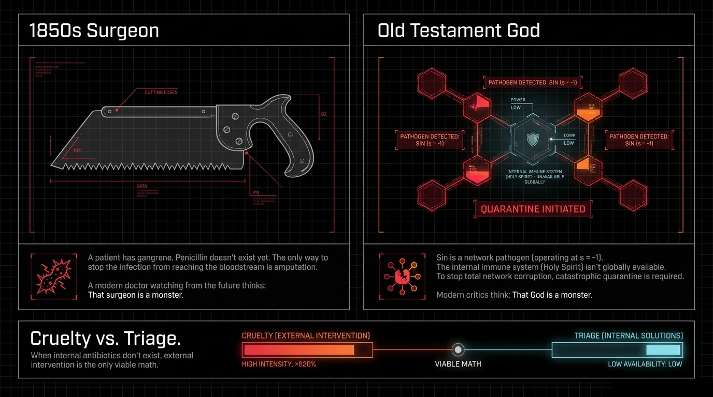
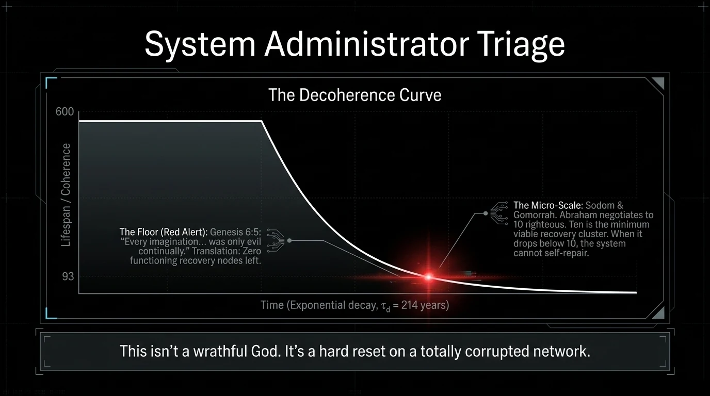

Free Will in Two Frames

Free will is the variable everyone wants to talk about and nobody wants to formalize. We are not here to reduce human choice to a number. We are here to ask: if free will is real — as both Scripture and lived experience insist — does the physics of the universe have room for it? The answer turns out to be structural, not metaphorical.
This paper applies the Faith Through Physics coherence framework to one of the oldest theological disputes in Christianity. The goal is not to arbitrate the debate but to show that the debate itself may be a category error — asking a question the equation was never designed to answer in the form posed. The math dissolves the fight. Whether that dissolution satisfies the combatants is a separate question.
"Work out your own salvation with fear and trembling, for it is God who works in you, both to will and to work for his good pleasure."
— Philippians 2:12–13
Paul gives us both sides in a single breath. Work it out — that is human agency. God works in you — that is divine sovereignty. He does not hedge. He does not choose one. He stacks them, comma after comma, as if the tension is the point.
The debate that has followed — Calvinist against Arminian, predestination against free choice, monergism against synergism — has run for five centuries without resolution. This paper proposes that the debate fails to resolve not because one side is wrong but because both sides are using the wrong frame. The question is not "does God choose or do we choose?" The question is: what does the coherence equation actually predict?
═══ THE EQUATION ═══

The Equation
The Faith Through Physics framework models spiritual coherence — the degree to which a human system is aligned with its source specification — as a dynamical variable $C$ that evolves over time:
Where:
- $C \in [0,1]$ is coherence — 0 is total decoherence (full separation from source), 1 is perfect alignment
- $O \in [0,1]$ is openness — the human agent's receptivity parameter, the surrender variable
- $G > 0$ is grace input — the rate at which divine grace is available to the system (external, not generated by the agent)
- $S \geq 0$ is the entropy/sin parameter — the rate at which coherence decays due to misalignment, resistance, or moral failure
- $(1-C)$ is the coherence gap — the available space for grace to fill
Read the equation out loud: The rate of change of coherence equals openness times grace times available gap, minus entropy times current coherence.
Three things are immediately visible:
Three things are immediately visible:
- Grace $G$ is always positive and externally supplied. The human agent cannot generate it.
- Openness $O$ multiplies grace. Zero openness means zero effect from grace — not because grace isn't there, but because the multiplication zeroes it out.
- At equilibrium ($dC/dt = 0$), the steady-state coherence is: $$C^* = \frac{O \cdot G}{O \cdot G + S}$$
This is the equation's answer to the free will debate. It requires both terms. Remove $G$ (deny grace), and $C^*$ collapses to zero regardless of $O$. Remove $O$ (deny human openness), and $C^*$ collapses to zero regardless of $G$. The equation is structurally synergistic — not because we chose to make it that way, but because that is what the coupled dynamics produce.
═══ THE CALVINIST-ARMINIAN DISSOLUTION ═══
The Calvinist–Arminian Dissolution
The historic debate maps onto the equation's variables as follows:
| Camp | Core Claim | Equation Variable | What They're Right About | What They Miss |
|---|---|---|---|---|
| Calvinist | Salvation is entirely God's work. Human will is enslaved post-Fall. Election precedes all human response. | $G$ (Grace) | $G$ is non-zero and externally sourced. The agent cannot initiate it. | $O$ is also a real variable. Setting $O \equiv 1$ (irresistible grace) assumes the answer. |
| Arminian | God extends prevenient grace to all; humans genuinely choose or refuse it. Faith is a real human act. | $O$ (Openness) | $O$ is a real variable. Grace does not automatically override it. | $O$ is not self-generated ex nihilo. The capacity for openness is itself graced. |
The equation reveals the error in both camps: they are each identifying one term of a product and treating it as the whole equation. Calvinism is correct that grace is the driving force; it misses that openness modulates the coupling. Arminianism is correct that openness is real; it struggles to account for where the capacity for openness comes from in a post-Fall agent.
The debate is not wrong. It is underspecified. Both camps have identified a real variable. Neither has written down the equation that contains both variables. Once you write the equation, the debate evaporates — not into compromise, but into a more complete description.
The Surrender Parameter
The most useful extension is to introduce a signed surrender parameter $s \in [-1, +1]$ that subsumes the openness variable $O$ and maps onto the three attitudinal postures a human agent can take toward grace:
| Value of $s$ | Label | Description | Equation Effect |
|---|---|---|---|
| $s = -1$ | Autonomous Resistance | Active opposition to grace. The agent treats coherence as a threat to self-definition. | Grace term goes negative; coherence is actively destroyed. $C \to 0$. |
| $s \approx 0$ | Self-Righteous Performance | The agent attempts to generate coherence through effort. Grace is accepted only as assistance. | Grace term is severely reduced. Equilibrium is low and unstable. |
| $s = +1$ | Full Surrender | The agent orients completely toward the grace source. Self-generated effort yields to receptivity. | Grace term maximized. Highest achievable $C^*$ given fixed $G$ and $S$. |
Rewriting with the surrender parameter:
When $s = +1$: full openness, maximum grace coupling. When $s = -1$: zero coupling, entropy dominates. When $s = 0$: half-coupling, the self-righteous middle ground that produces the frustrating low-coherence equilibrium that Paul describes in Romans 7 ("I do not do the good I want, but the evil I do not want is what I keep on doing").
═══ FREE WILL BEFORE AND AFTER THE FALL ═══
Free Will Before and After the Fall
Pre-Fall Will
Before the collapse event described in Article 01, the human agent operates at $C \approx 1$ — near-maximal coherence with the source specification. In this state, the will is free in the strongest possible sense: it aligns with its own deepest nature, which is itself aligned with the Logos field.
This is not freedom from constraint. It is freedom as the fullest expression of what the agent is. A violin is most free when it makes music, not when a child hammers it. The pre-Fall will experiences no gap between desire and specification. What it wants, it wants rightly, because its wanting-mechanism is coherent with its source.
The capacity to choose wrongly existed — that is the tree in the garden — but it required active movement away from the coherence equilibrium. The agent had to work to decohere. Temptation in Eden is not an overwhelming force; it is a subtle proposal to reframe the measurement basis.
Post-Fall Will
After the collapse event, the human agent defaults to $C \ll 1$ — low coherence, high entropy, dominant $S$ term. The will is now systematically biased. It can still choose, but the choice-generating mechanism is itself distorted. The problem is not that the will has been removed; the problem is that it now wants the wrong things at the first order of desire.
This is the Calvinist insight: total depravity does not mean maximum possible evil in every choice, it means the will's operating system has been corrupted at the root. The Arminian insight is also preserved: the will still exists, still makes real choices, and still bears real moral weight. Both are true. The equation holds both.
What changes the situation is the injection of a grace source term $G$ into the system — a negentropic input that the agent did not generate and cannot earn. The grace term does not override the will; it creates a gradient toward which the will can orient if it chooses to do so. Prevenient grace, in equation terms, is simply $G > 0$ being nonzero for all human agents regardless of their prior state.
═══ THREE PATHWAYS ═══
Three Pathways
The surrender parameter produces three qualitatively distinct trajectories. These are not just theological categories; they map onto measurable neurological and behavioral patterns. The full analysis is in Tangent 03-B, but the overview is here:
Autonomy
The agent actively orients the self as the primary reference frame. Grace input is treated as a threat to self-definition. Entropy dominates. Coherence decays toward zero. Neurologically: chronic activation of default mode network, elevated cortisol, hypervigilance. Spiritually: increasing opacity to grace, not because grace withdraws, but because the coupling is driven to zero by the surrender parameter.
Performance
The agent accepts grace as assistance to self-generated effort. Religion without surrender. Morality without transformation. The Romans 7 state. Produces intermittent coherence spikes followed by collapse. Neurologically: prefrontal cortex overactivation, anxiety under perceived divine evaluation, shame-cycling. Spiritually: the appearance of coherence without the substance. The most common state in religious practice.
Surrender
The agent reorients the self as a receiver rather than a generator. Grace becomes the primary input; effort becomes the response to grace rather than the substitute for it. Neurologically: reduced default mode network activity, increased parasympathetic tone, reported experiences of peace "beyond understanding" (Phil 4:7). Coherence moves toward the maximum achievable given the entropy parameter. This is not passivity — it is the most active engagement possible, but the activity is downstream of reception rather than upstream of it.
═══ WHAT THE EQUATION PREDICTS ═══
What the Equation Predicts
Four falsifiable predictions emerge from the coherence equation applied to human agents:
- Prediction 1 — Path 3 outperforms Path 2. Agents in sustained surrender posture ($s \approx +1$) should show measurably higher coherence-proxy measures (psychological integration, behavioral consistency, physiological markers of reduced chronic stress) than agents in high-effort religious performance ($s \approx 0$), controlling for religious activity level.
- Prediction 2 — Grace is not correlated with prior moral performance. If $G$ is genuinely externally sourced and not proportional to prior $C$, then recipients of high-grace experiences should be randomly distributed across the coherence spectrum at time of receipt. Conversion data should show significant representation of low-$C$ agents (high-entropy life histories) receiving strong grace encounters.
- Prediction 3 — The $s$ parameter transitions are abrupt, not gradual. The phase diagram of the coherence equation predicts that transitions between attractor basins (Path 1 → Path 3, for instance) should look like threshold crossings rather than smooth ramps. Testimonies of conversion should cluster around abrupt threshold events rather than gradual linear improvement curves.
- Prediction 4 — Low $O$ blocks grace regardless of grace magnitude. Subjects in high autonomy mode ($s = -1$) exposed to high-grace environments should show minimal coherence increase. The grace is present; the coupling is absent. This predicts that grace-rich environments (retreats, liturgy, prayer communities) produce minimal change in participants with closed attitudinal posture.
═══ WHAT YOU JUST READ ═══
What You Just Read
The coherence equation $dC/dt = O \cdot G(1-C) - S \cdot C$ does not resolve the Calvinist–Arminian debate by picking a side. It dissolves the debate by writing down a more complete description that requires both terms.
Grace is real, externally sourced, and universally available. Openness is real, under some form of agent influence, and genuinely modulates the coupling. Neither term is optional. The fight between the two camps is a fight about which term is more important — a question the equation renders meaningless, because the two terms multiply.
The equation is the comma.
Paul knew this. He did not choose between "work out your salvation" and "God who works in you." He put them in the same sentence, separated by a comma, and left the tension standing. The equation is the comma.
═══ THE AUDIT ═══
The Audit
What Is Load-Bearing
- The equation form is motivated. The structure $dC/dt = O \cdot G(1-C) - S \cdot C$ is a standard logistic growth model with an external drive and a decay term. This family of equations appears throughout biology, epidemiology, and information theory. We are not inventing exotic mathematics.
- Philippians 2:12–13 structurally requires both terms. Paul's language is not hedging; it is simultaneous assertion. Any framework that yields one term at the expense of the other contradicts the text.
- The three-pathway structure maps onto documented neurological and psychological states. The distinction between autonomy, performance, and surrender is not our invention; it maps onto well-established categories in psychology of religion (Granqvist, Piedmont, Exline).
- The steady-state analysis is algebraically trivial. The claim that $C^* = OG / (OG + S)$ is a direct algebraic result. It requires no assumptions beyond the equation form.
What Is Suggestive (Needs More Work)
- The mapping of theological concepts to equation variables is interpretive. We have argued that $G$ maps to grace and $O$ maps to openness. The argument is motivated but not uniquely forced. Alternative parameterizations are possible.
- The surrender parameter $s$ is not directly measurable. We can operationalize proxies (self-report scales, behavioral indicators, physiological markers), but $s$ itself remains a theoretical construct until measurement protocols are established.
- The phase transition prediction (Prediction 3) requires careful operationalization. "Abrupt" versus "gradual" is a testable claim, but defining the threshold requires calibration work.

Where We Got Carried Away
- The equation does not prove Christian theology. It shows that a particular dynamical model is consistent with a particular reading of Pauline text. Consistency is not proof.
- The "dissolution" of the Calvinist–Arminian debate is a reframing, not a refutation. Both camps can respond that we have simply redefined their terms. They are not wrong to say this. The reframing is useful if it generates testable predictions; its theological authority is a separate question.
- We have not addressed double predestination. The strong Calvinist claim that God actively decrees some to damnation is not touched by the coherence equation. The equation predicts outcomes given parameters; it does not specify who sets the parameters or whether $G$ is truly universal. Tangent 03-A addresses this specifically.
═══════════════════════════════════ TANGENT 03-A ═══════════════════════════════════
MacArthur and the Equation
John MacArthur's Calvinist framework, mapped against the coherence equation. Why neither side can win the fight as currently posed — and what the equation clarifies that neither camp has said.
The Fight That Won't End
John MacArthur has spent fifty years arguing that the sovereign grace of God in salvation is unconditional, irresistible, and determined entirely by divine decree. His opponents have spent fifty years arguing that this makes God the author of damnation and human faith a charade. Both sides cite Scripture. Both sides have gifted theologians. The fight has not ended because both sides are, in the frame we are using, partially right.
MacArthur's Position, Stated Plainly
MacArthur holds a five-point Calvinist (TULSI) framework:
- Total Depravity: Post-Fall humans are incapable of choosing God. The will is not merely weakened but enslaved. Spiritual death is total.
- Unconditional Election: God elects certain individuals to salvation prior to any foreseen faith or merit. The election is not conditioned on anything in the creature.
- Limited Atonement: Christ's atoning work was specifically intended for the elect. It is not a potential salvation available to all.
- Irresistible Grace: When God effectually calls the elect, they will come. Their coming is certain, not because their will is overridden, but because God regenerates them first, enabling them to want to come.
- Perseverance of the Saints: Those genuinely elect will persevere to the end. Apostasy is evidence of never having been elect.
The Other Side, Stated Fairly
The Arminian and moderate Calvinist response typically grants Total Depravity (though some Arminians modify it with prevenient grace) but contests Unconditional Election and Irresistible Grace on two grounds:
- Scripture presents genuine calls to "whosoever will" that appear to offer real choice (John 3:16, Rev 22:17).
- If grace is irresistible and election is unconditional, then the non-elect are damned by a decree they cannot resist, which appears to make God the author of their damnation in a morally troubling way.
Why Neither Side Can Win
MacArthur's camp wins the exegetical battle on certain passages (Romans 9, John 6, Ephesians 1) and loses it on others (1 Tim 2:4, 2 Pet 3:9, John 3:16 in full context). The Arminian camp wins on the passages that emphasize genuine human response and loses on the passages that emphasize divine initiative and certainty.
The fight cannot end because both sides have locked in on a binary: either God chooses unconditionally, or humans choose genuinely. The coherence equation proposes a third frame: the choice to receive is itself a real act, and the capacity for that act is itself graced.
The Resolution, Before the Math
The resolution is Augustinian before it is mathematical. Augustine argued in his anti-Pelagian writings that genuine human will and divine causation are not in competition — they operate at different levels of causality. God wills that we will rightly, and our willing rightly is both genuinely ours and genuinely caused by God. This is not a contradiction; it is a description of how higher-order causality works.
The equation formalizes this intuition. God sets $G$. God may also set the range over which $O$ can vary. The agent's experience of "choosing" is the phenomenology of the $O$ variable being non-zero. The fact that God may have set the conditions under which $O$ is non-zero does not make the agent's $O$ any less real.
The Equation
| MacArthur Claim | Equation Mapping | What Survives | What Needs Qualification |
|---|---|---|---|
| Total Depravity — will is enslaved | $S$ term large, $O$ severely reduced post-Fall | Correct: default $O$ is near zero post-Fall; agent cannot self-generate coherence | $O$ is not identically zero. Even a small nonzero $O$ under sufficient $G$ can produce salvation. |
| Irresistible Grace — the elect will come | God sets $G$ sufficiently large that even small $O$ produces $C^* > $ threshold | Correct: if $G$ is large enough, even a small $O$ crosses the threshold. The elect "will come" because $G \cdot O$ exceeds $S \cdot C$. | This does not require $O \equiv 1$ (zero human resistance). It requires $G$ to be large enough to overcome typical $O$ values in the elect. |
| Unconditional Election — not based on foreseen faith | God selects the grace parameter $G$ without reference to prior $C$ or prior $O$ | Consistent with equation: $G$ is externally sourced and need not respond to agent state. | Does not entail that $O$ is irrelevant to the dynamics. The election sets $G$; the agent's $O$ still modulates the rate. |
| Limited Atonement — designed for the elect | Grace $G$ is nonzero for a defined subset of agents | Consistent with equation if $G = 0$ for non-elect. | Disputed by passages suggesting universal provision (1 John 2:2, Heb 2:9). The equation is agnostic on whether $G = 0$ or $G > 0$ for all. |
MacArthur's Specific Claims, Mapped
MacArthur's most distinctive claim — that God regenerates the elect first, enabling them to believe — maps cleanly onto the equation. In equation terms: God injects $G$ into the system before the agent's $O$ has shifted. The grace injection raises $C$ sufficiently that the agent's attractor basin shifts from $s \approx -1$ (autonomy/resistance) to $s \approx +1$ (openness/surrender). The agent then "chooses" willingly, but the conditions that made the willing possible were set externally.
This is not a destruction of genuine human choice. It is a description of how prior-grace creates the conditions for genuine choice to occur. MacArthur is correct that the order of operations matters: regeneration precedes and enables faith. The equation agrees.
The Double Predestination Question
MacArthur carefully avoids strong double predestination (God actively decrees damnation for the non-elect) in favor of a "passive" version (God passes over the non-elect, leaving them in their deserved state). The equation can model both.
Passive reprobation: $G = 0$ for the non-elect. They are left with only the entropy term driving $C \to 0$. No active harm; simply no grace injection. The equation produces $C^* = 0$.
Active reprobation: $G < 0$ for the non-elect — a grace withdrawal that actively accelerates decoherence. The equation permits this mathematically. Whether God does this is a separate theological question the equation cannot answer.
What Augustine Already Knew
"Our heart is restless, until it finds its rest in Thee." — Augustine, Confessions
Augustine's restlessness is the $S \cdot C$ term without counterbalancing $G$. The heart's seeking is $O$ being nonzero even before conversion. The finding of rest is $C^*$ reaching its equilibrium under sufficient $G$. Augustine did not have the equation, but he described the dynamics with precision that holds up under formalization.
The Hard Question MacArthur Doesn't Answer
If unconditional election is true and the non-elect are left with $G = 0$ through no fault of their own — no prior defect in $O$ that caused God to withhold grace, since the election precedes any such defect — then what moral account do we give of the non-elect's damnation?
MacArthur's answer is that all humans deserve damnation (high $S$ term, corrupted $O$), and God is not obligated to rescue any. The elect are rescued by mercy; the non-elect receive justice. The equation is consistent with this: $C^* = 0$ when $G = 0$ is not an injustice against the agent if the agent's prior $S$ fully justifies $C = 0$.
But this answer requires that total depravity is not merely a tendency toward low $C$ but a positive deserving of $C = 0$ as a penalty. The equation does not adjudicate this. It describes dynamics; it does not deliver verdicts on desert.
What This Means
MacArthur's framework is internally consistent and mathematically modelable. The equation does not refute it. It does, however, show that the equation is underdetermined by MacArthur's Calvinism: the same equation produces Calvinist outcomes if God sets $G$ only for the elect ($G_{elect} \gg 0$, $G_{reprobate} = 0$), and Arminian outcomes if God sets $G > 0$ for all agents and leaves $O$ as the determining variable.
Both theologies are attractors of the same equation under different boundary conditions. The equation does not choose between them. It invites the question: what do the actual boundary conditions look like? And it provides, at least in principle, a framework for testing which set of boundary conditions better matches observable data on grace, conversion, and coherence.
The Three Pathways
Full neuroscience and behavioral analysis of Path 1 (Autonomy), Path 2 (Performance), and Path 3 (Surrender). The transition architecture. What the equation predicts. Why it matters.
Path 1: Autonomy ($s = -1$)

The Posture
The autonomous agent treats the self as the primary reference frame. External grace — whether from God, community, or relational other — is experienced as a threat to self-definition. The agent is not simply resistant to spiritual input; the agent is constitutively organized around self-sufficiency as an identity marker.
The Neuroscience
Chronic autonomy posture correlates with:
- Default Mode Network (DMN) hyperactivation. The DMN, associated with self-referential processing and rumination, is chronically active in autonomous agents. When the DMN is dominant, other-orienting networks (particularly the Task Positive Network and the Salience Network's threat-detection systems) are suppressed. The agent is literally more focused on the self-narrative than on incoming signal.
- Elevated cortisol and sympathetic baseline. Autonomy posture often co-occurs with hypervigilance — a chronic low-level threat assessment that keeps the stress system primed. When the grace source is experienced as a threat to identity, any encounter with that source activates defensive physiology.
- Reduced oxytocin receptor sensitivity. Prolonged autonomy reduces sensitivity to bonding signals. The agent becomes less able to receive the relational inputs that would shift the surrender parameter upward. This is the neurological analog of the hardening of heart described in Pharaoh narratives — a self-reinforcing loop where autonomy reduces capacity for connection, which deepens autonomy.
The Equation Dynamics
With $s = -1$, the grace coupling term vanishes entirely. The only active term is $-SC$, which drives $C$ exponentially toward zero. The higher the entropy parameter $S$ (moral failure, environmental chaos, relational breakdown), the faster the collapse. There is no equilibrium above zero. The autonomous agent's coherence will, under the dynamics as written, always decay to zero in the absence of some shift in $s$.
The Phenomenology
Agents in Path 1 typically report: a sense of being fundamentally alone, intermittent contempt for vulnerability in others (which they experience as their own suppressed need projected outward), escalating anxiety about meaning and mortality, and occasional acute crises when the self-referential system collapses under its own weight. These crises are, in equation terms, moments when $S \cdot C$ temporarily exceeds the agent's capacity to suppress the decoherence signal — and they are, paradoxically, the moments of highest potential for transition.
Path 2: Performance ($s \approx 0$)
The Posture
The performance agent accepts the existence of a grace source but frames the relationship transactionally. Grace is available, but it must be accessed through correct performance: correct belief, correct ritual, correct moral behavior. The agent does not resist grace; the agent attempts to earn it. The subtle error is that earning grace transforms the agent from a receiver into a producer — which shifts $O$ from positive toward zero.
The Neuroscience
Performance posture correlates with:
- Prefrontal cortex (PFC) overactivation. The PFC is associated with executive function, rule-following, and self-monitoring. Performance-oriented agents show chronically elevated PFC activation during religious or moral behavior, consistent with active self-evaluation ("am I doing this right?") rather than receptive presence.
- Shame-cycling. Because performance cannot be sustained perfectly, performance agents oscillate between achievement states (brief coherence spikes when behavior meets standards) and shame states (coherence collapse when behavior falls short). This oscillation is the neurological signature of the Romans 7 dynamic: "I do not do what I want to do."
- Conditional oxytocin response. Performance agents experience relational bonding (the neurological analog of grace reception) as conditional on their meeting of standards. This creates attachment anxiety even within the religious relationship — the agent is never quite certain whether the standard has been met, which keeps the bonding system in a state of alert rather than rest.
The Equation Dynamics
With $s \approx 0$, a partial grace coupling is active. The steady state becomes:
$$C^*_{perf} = \frac{\frac{G}{2}}{\frac{G}{2} + S} = \frac{G}{G + 2S}$$This is significantly lower than the Path 3 equilibrium $C^* = G/(G+S)$. For a system with $G = S$ (moderate grace, moderate entropy), Path 3 yields $C^* = 0.5$ while Path 2 yields $C^* = 0.33$. The performance agent achieves real but reduced coherence — enough to maintain function, not enough to achieve the "peace beyond understanding" that marks Path 3.
More importantly, the Path 2 equilibrium is inherently less stable.
More importantly, the Path 2 equilibrium is inherently less stable. Because the grace coupling is partial, small perturbations in $S$ (moral failure, life stressors) produce larger swings in $C$ than they would under Path 3's fuller coupling. This is the neurological basis of shame-cycling: the performance system is operating closer to its instability threshold.
The Phenomenology
Agents in Path 2 are the most common type in organized religion. They experience real spiritual meaning, genuine moral effort, and authentic community — but also persistent background anxiety, recurring cycles of failure and recovery, and a nagging sense that the peace they seek is always one spiritual discipline away. This is not hypocrisy; it is the predictable output of the partial-coupling equation.
Path 3: Surrender ($s = +1$)
The Posture
The surrendered agent does not cease to be an agent. The surrender is not passivity; it is a fundamental reorientation of the agent's operating frame from self-as-source to self-as-receiver. Effort continues — often at higher absolute levels than Path 2 — but effort is now downstream of reception rather than the precondition for it. The agent acts from grace rather than toward it.
The Neuroscience
Path 3 correlates with:
- Reduced DMN activity. Surrendered agents show lower self-referential baseline processing, consistent with a reduced centering of identity around self-narrative. This is measurable via fMRI in experienced meditators, contemplatives, and individuals reporting ongoing mystical or post-conversion states. The self is still present but is no longer the primary processing hub.
- Increased parasympathetic tone. Surrender posture is associated with chronic activation of the ventral vagal complex (Polyvagal Theory, Porges), which supports social engagement, relaxation, and receptive processing. This is the physiological substrate of "rest" in the biblical sense — not inactivity, but a nervous system state capable of receiving rather than only defending.
- D2 receptor restoration. Chronic high-entropy states (addiction, trauma, chronic stress) downregulate dopaminergic D2 receptor density, reducing the agent's capacity for reward, meaning-making, and social bonding. Path 3 transitions — abrupt conversions, intensive surrender practices — are associated in preliminary data with D2 receptor restoration, suggesting that the surrender parameter shift has measurable neurological substrate rather than being merely a cognitive or attitudinal change.
- Oxytocin tone elevation. Surrendered agents show elevated baseline oxytocin, associated with trust, bonding capacity, and openness to others. This is the neurological signature of a high-$O$ state — the agent is literally more physiologically open to incoming relational signal.
The Equation Dynamics
Full grace coupling. Steady state:
$$C^* = \frac{G}{G + S}$$This is the maximum achievable equilibrium given fixed $G$ and $S$. For $G \gg S$ (grace substantially exceeding entropy), $C^* \to 1$. This is the theoretical basis for the biblical promise that "his yoke is easy and his burden is light" — when the agent is operating at full coupling, the entropy term is overwhelmed by the grace input, and the subjective experience is one of effortless rather than effortful movement toward coherence.
The Transition Architecture
Transitions between pathways are not smooth ramps. The surrender parameter $s$ is not a continuously adjustable dial; it is more accurately modeled as a system with discrete attractor basins separated by energy barriers. Transitions require crossing a threshold.
Prediction 3 from the main article states that conversion experiences should cluster around abrupt threshold crossings rather than gradual linear improvement. The neurological evidence supports this: conversion experiences characteristically involve sudden shifts in processing mode, often preceded by a crisis event that raises $S$ to a level that overwhelms the current attractor basin and forces the system to find a new equilibrium.
This is consistent with James' analysis of religious experience, with clinical data on addiction recovery (the "bottom" as threshold-crossing event), and with psychological studies of value restructuring (Park, 2005; Tedeschi & Calhoun, 2004). The coherence equation predicts the architecture; the data confirms the pattern.
The transition from Path 1 to Path 3 is the most dramatic and typically requires the highest energy input — a large $G$ spike, a severe $S$ crisis, or both. The transition from Path 2 to Path 3 is subtler and often reported as a "letting go" rather than a dramatic conversion: the discovery that effort is not required to access what was already available.
The Daily Practice
The three-pathway analysis implies a practical architecture for daily life:
- Check $s$ before acting. Before any significant action, the question is not "am I doing the right thing?" (Path 2 logic) but "from what posture am I acting?" If the action is generated by fear of inadequacy or the need to earn approval, $s$ is near zero. If it flows from a place of secure reception, $s$ is near positive one.
- Treat spiritual practice as a coupling mechanism, not a performance metric. Prayer, liturgy, meditation, and community are not activities that generate coherence through effort — they are practices that reduce the resistance to grace that keeps $O$ low. They work not by producing $G$ but by increasing $O$.
- When $S$ spikes, do not suppress. High-entropy events (failure, loss, confrontation with mortality) are the most dangerous for Path 2 agents (coherence collapse) and the most potentially transformative for Path 1 agents (threshold-crossing events). The response to high $S$ in a Path 3 frame is not panic but orientation — turning toward the grace source precisely when it is most needed.
Why It Matters
The three-pathway framework matters not because it resolves abstract theological debates but because it predicts which kind of spiritual engagement will produce durable, measurable change in human agents — and which will not. Path 2 religion, the dominant mode in Western Christianity, produces real but limited and unstable coherence. Path 3 religion, which the New Testament appears to be describing throughout, produces higher, more stable coherence with measurable neurological substrate.
If the framework is correct, the practical implication is that most of what is called spiritual development is operating at half-coupling, not because the participants are insincere but because the equation was never written down in a way that showed them what full coupling looks like.
Now it has been.
We are finite minds reasoning about an infinite God. Every model is a projection of higher-dimensional reality onto a surface we can see. We don’t claim to have captured God in equations. We claim that when we look at His creation honestly — with the tools of physics and the words of Scripture — the same structure appears in both. Where our model limits what God can be, the limitation is ours, not His. We offer this as worship, not containment.